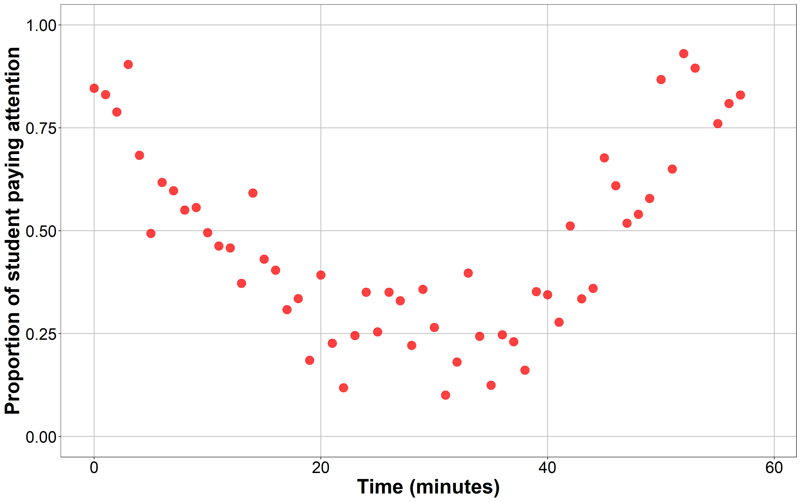
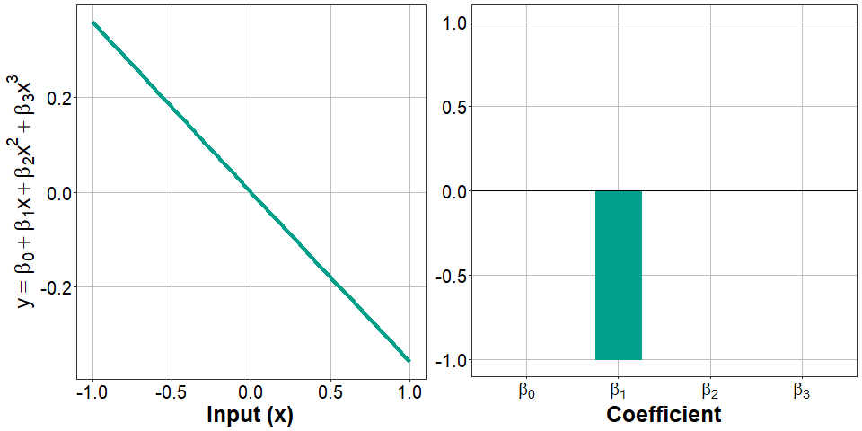
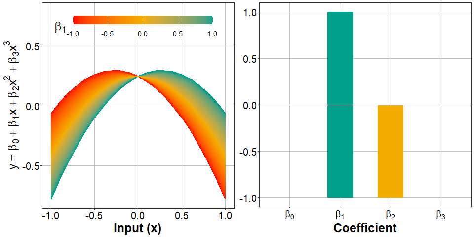
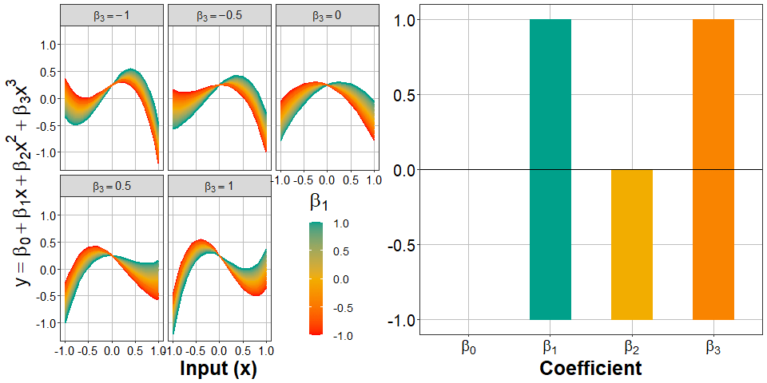

![]()
R version 4.3.3 (2024-02-29 ucrt)
Platform: x86_64-w64-mingw32/x64 (64-bit)
Running under: Windows 11 x64 (build 22631)
Matrix products: default
locale:
[1] LC_COLLATE=English_United Kingdom.utf8
[2] LC_CTYPE=English_United Kingdom.utf8
[3] LC_MONETARY=English_United Kingdom.utf8
[4] LC_NUMERIC=C
[5] LC_TIME=English_United Kingdom.utf8
time zone: Europe/Berlin
tzcode source: internal
attached base packages:
[1] stats graphics grDevices datasets utils methods base
other attached packages:
[1] quarto_1.4
loaded via a namespace (and not attached):
[1] digest_0.6.36 later_1.3.2 fastmap_1.2.0 xfun_0.46
[5] knitr_1.48 htmltools_0.5.8.1 rmarkdown_2.27 ps_1.7.7
[9] cli_3.6.3 processx_3.8.4 renv_0.16.0 compiler_4.3.3
[13] rstudioapi_0.16.0 tools_4.3.3 evaluate_0.24.0 Rcpp_1.0.13
[17] yaml_2.3.9 htmlwidgets_1.6.4 rlang_1.1.4 jsonlite_1.8.8 When modelling data using regression, sometimes the relationship between input variables and output variables is not very well captured by a straight line. A standard linear model is defined by the equation
\[y_i = \beta_{0} + \beta_{1}x_{i}\]
where \(\beta_{0}\) is the intercept (the value of the input variable \(x\) where the output variable \(y=0\)), and where \(\beta_{1}\) is the coefficient of the input variable (how much \(y\) increases for every unit increase in \(x\)). To illustrate this, let’s imagine we are curious abut what proportion of the students in a classroom are paying attention, and how this proportion changes as minutes pass. We could formalise our model as
\(y_i = \beta_{0} + \beta_{1} Time_i\)
Let’s generate some data to illustrate this example. Let’s say that, at the beginning of the lesson, almost 100% of the students are paying attention, but that after some time stop paying attention. Right before the end of the class, students start paying attention again.

The attention paid by the students did not decay linearly, but first dropped and rose up again, following a curvilinear trend. In these cases, we may want to perform some transformation on some input variables to account for this non-linear relationship. One of these transformations are polynomial transformations. In this context, when we talk about applying a polynomial function to a set of values, we usually mean exponentiating it by a positive number larger than 1. The power by which we exponentiate our variable defines the degree of the polynomial we are obtaining. Exponentiating our variable to the power of 2 will give us its second-degree polynomial. Exponentiating it by 3 will give us its third-degree polynomial, and so on. Back to our classroom example, we could add a new term to our regression equation: the second-degree polynomial of the input variable \(Time\), or even a third degree polynomial if we wanted to test to what extend our model follows a more complex pattern. Our regression trend will not be linear any more, but curvilinear. Let’s take a look at the anatomy of polynomials from a visual (and very informal perspective). Our model would look like this:
\[ y_i = \beta_{0} + \beta_{1} Time_i + \beta_{2} Time_{i}^2 + \beta_{3} Time_{i}^3 \]
Adding polynomial terms to our regression offers much flexibility to researchers when modelling this kind of associations between input and output variables. This practice is, for example, common in Cognitive Science when analysing repeated measures data such as eye-tracking data, where we register what participants fixated in a screen during a trial under several conditions. Polynomial regression could be considered as of the main techniques in the more general category of Growth Curve Analyis (GCA) methods. If you are interested in learning GCA, you should take a look at Daniel Mirman’s “Growth Curve Analysis and Visualization Using R” [book].
Powerful as this technique is, it presents some pitfalls, especially to newbies like me. For instance, interpreting the outputs of a regression model that includes polynomials can tricky. In our example, depending on the values of the coefficients \(\beta_{1}\), \(\beta_2\) and \(\beta_3\)–the first-degree and second-degree polynomials of \(Time\)–the shape of the resulting curve will be different. The combination of values that these two coefficient can take is infinite, and so is the number of potential shapes our curve can adopt. Interpreting how the values of these coefficients affect the shape of our model, and more importantly, their interaction with other predictors of interest in the model can be difficult without any kind of visualisation. The aim of this post is to visualise how the regression lines of a regression model changes with the degree of its polynomials. For computational constraints, and to make visualisation easier, I will only cover one, two, and three-degree polynomials. I will generate plots for multiple combinations of the coefficients of these polynomials using the base R function poly() to generate polynomials, the R package ggplot2() to generate plots, and the gganimate R package to animate the plots. I will briefly describe what is going on in each plot, but I hope the figures are themselves more informative than anything I can say about them!
Intercept
First, let’s start with how the value of the intercept (\(\beta_0\)) changes the regression line for polynomials of different degree (1st, 2nd, and 3rd). I set the rest of the coefficients to arbitrary values for simplicity (\(\beta_1 = \beta_2 = \beta_3 = 1\)). As you can see, regardless of the order of the polynomials involved in the model, increasing the intercept makes the line be higher in the Y-axis, and decreasing the value of the intercept makes the line be lower in the Y-axis. Simple as that.
The interpretation of the intercept is similar to how we interpret it in standard linear regression models. It tells us the value of \(y\) when all predictors are set to 0 (in our case \(Time = 0\)). As we will discuss later, what that means in practice depends on what that zero means for the other coefficients, that is, how we coded them. For now, let’s continue adding more terms to the equation.
Linear term: adding a 1st-order polynomial
Now let’s see how a linear model (with only a 1st degree polynomial) changes as we vary the value of \(\beta_1\), the coefficient of the linear term \(Time\). As you can see, nothing special happens, the line just gets steeper, meaning that for every unit increase in \(x\), \(y\) increases (or decreases, depending on the sign) in \(\beta_1\) units. When the coefficient equals zero, there is no increase nor decrease in \(y\) for any change in \(x\).

When \(\beta_1=0\), the resulting line is completely horizontal, parallel to the X-axis. This is what a model with just an intercept (\(y = \beta_{0}\)) would look like. We generalise this to say that the linear model we just visualised is exactly the same as adding a 2nd and a 3rd degree polynomial to the model with their correspondent coefficients set to zero (\(\beta_2 = 0\) and \(\beta_3 = 0\), respectively).
Quadratic: adding a 2nd-order polynomial
Now things get a bit more interesting. When we add a second degree polynomial (\(Time^2\)), the line is not linear any more. If the coefficient of the 2nd-order polynomial (\(\beta_2\)) is positive, the curve will go down and up in that order. When \(\beta_2 < 0\), the curve goes up and then down. When \(\beta_2 = 0\), the curve turns out the be a line whose slope is defined by \(\beta_1\), just like in the previous example.

Importantly, varying the value of the coefficient of 1st-order polynomials (\(\beta_1\)) also changes the shape of the curve: more positive values of \(\beta_1\) make the curve “fold” at higher values of \(x\). As you can see, when \(\beta_1 < 0\) (left panel, in blue), the point at which the curve starts increasing or decreasing occurs more to the left. When \(\beta_2 > 0\), this change occurs more to the right.
Cubic: adding a 3rd-order polynomial
Finally, let’s complicate things a bit more by adding a third-order polynomial. Now the curve will “fold” two times. The magnitude of \(\beta_3\) (the coefficient of the 3rd-degree polynomial) determines how distant both folding points are in the y-axis. When \(\beta_3\) is close to zero, both folding points get closer, resembling the shape we’ve seen in a model with just a 2nd-degree polynomial. In fact, when \(\beta_3 = 0\), we get the same plot (compare the panel to the right-upper corner to the plot in the previous section). The sign of \(\beta_3\) also determines whether the curve goes down-up-down or up-down-up: down-up-down if \(\beta_3 < 0\), and up-down-up if \(\beta_3 > 0\).
The magnitude of \(\beta_2\) (the coefficient of the 2rd-degree polynomial) determines the location of the mid-point between both folding points. For more positive values of \(\beta_2\) this point is located higher in the y-axis, while for more negative values of \(\beta_2\), this point is located lower in the y-axis. This value is a bit difficult to put in perspective in our practical example. Probably \(\beta_1\) is more informative: \(\beta_1\) changes the value of \(x\) at which the curve folds. More negative values of \(\beta_1\) make the curve fold at lower values of \(x\), while more positive values of \(\beta_1\) make the curve fold at higher values of \(x\).

Conclusion
There are way more things to say about polynomial regression, and it’s more than likely that I sacrifice accuracy for simplicity. After all, the aim of generating these animations was helping myself understand the outputs of polynomial models a bit more easily in the future. I hope it helps others too. If you consider something is misleading or inaccurate, please let me know! I’m the first interested in getting it right. Cheers!
Just the code
Session info
Reuse
Citation
BibTeX citation:
@online{garcia-castro2021,
author = {Garcia-Castro, Gonzalo},
title = {Visualising Polynomial Regression},
date = {2021-01-21},
url = {http://github.com/gongcastro/gongcastro.github.io/blog/visualising-polynomial-regression/visualising-polynomial-regression.html},
langid = {en}
}
For attribution, please cite this work as:
Garcia-Castro, G. (2021, January 21). Visualising polynomial
regression. http://github.com/gongcastro/gongcastro.github.io/blog/visualising-polynomial-regression/visualising-polynomial-regression.html